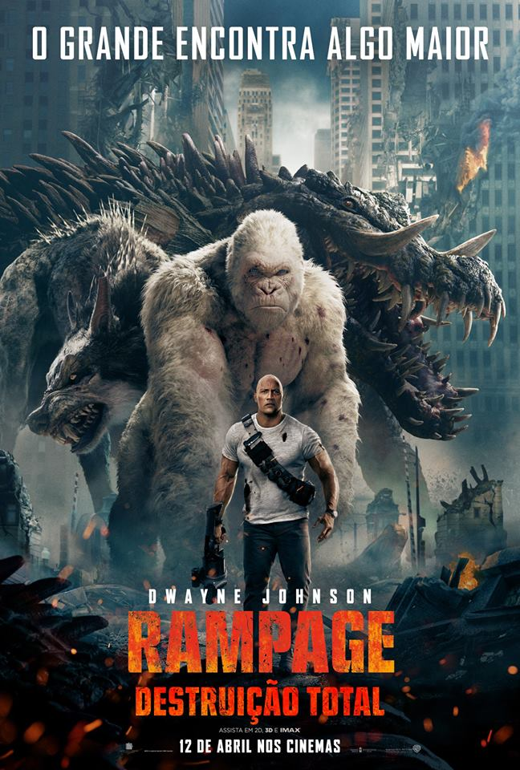

Rampage
Sinopse
Davis Okoye é um primatologista (Dwayne Johnson), um homem recluso que compartilha um vínculo inabalável com George, um gorila muito inteligente que está sob seus cuidados desde o nascimento. Quando um experimento genético desonesto é feito em um grupo de predadores que inclui o primata, os animais se transformam em monstros que destroem tudo em seu caminho. Agora Okoye tenta conseguir um antídoto e impedir que seu amigo provoque uma catástrofe global.
Distribuidor
Warner Bros